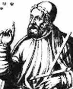

Yunan astronom, matematikçi ve coğrafyacı Batlamyus (Batlamyus 100-170) en çok yaptığı büyük yanlışla hatırlanmaktadır: Astronomi çalışması Almagest’te Güneş’in, yıldızların ve gezegenlerin Dünya’nın etrafında döndüğünü iddia etmiştir. Bu düşüncesi sonraki bin dört yüz yıl boyunca astronomlar tarafından doğru kabul edilecek ve ancak 16. yy’da çürütülebilecektir.

Nicolas Copernicus (1473-1543) dünyanın güneşin etrafında döndüğünü ispatlamadan önce, Batlamyus tarihin en büyük astronomu olarak kabul edilmekteydi. Eseri bu süreç boyunca Batı dünyasının evrenle ilgili en önemli başvuru kaynağı olarak değerlendirilmiştir.
Batlamyus Mısır’da doğmuş ve hayatının büyük bölümünü İskenderiye’de geçirmiştir. İskenderiye o dönemde Roma’nın Mısır eyaletinin başkentiydi ve Romalılar’dan önce Yunan egemenliği altında bulunmuştu. Batlamyus antik Yunanca konuşmakta ve yazmaktaydı. Aynı zamanda bir Roma vatandaşı olarak bölgedeki pek az kişiye nasip olan ayrıcalıklı bir statüye sahipti.
120 yılında Batlamyus astronomi gözlemlerini kayıt altına almaya başladı. Bunları Almagest’i yazarken kullanacaktı. Başta tutulmalar ve Güneş’in hareketleri üzerine çalışan Rodoslu bir astronom olan Hipparchus olmak üzere çeşitli antik çağ astronomlarının çalışmalarını da özetleyen kitabı Almagest, antik dünyanın sahip olduğu tüm astronomi bilgisinin derlenmesiyle ortaya çıkmıştır. 150 yılında tamanlanan metin yüzyıllar boyunca astronom ve astrologlar tarafından tutulmaların tahmin edilmesi ve horoskopların hazırlanılmasında kullanılmıştır.
Batlamyus aynı zamanda ünlü bir haritacıydı. Antik dünyanın en doğru haritalarını yapmıştır. Enlem ve boylamları yaygın bir biçimde kullanan ve dünyanın eğimini gösteren ilk haritaları o hazırlamıştır. Astronomi çalışmaları gibi Batlamyus’un coğrafyası da ölümünden sonraki yüzyıllar boyunca bilimsel bilginin doruk noktası olarak kabul edilmiştir.
Ek Bilgiler
1- Batlamyus bir dünya atlası ve harita hazırlama rehberi yazmayı amaçlıyordu. Son derece detaylı olan bu çalışma sayesinde herkes kendi haritasını yapabilecekti. Haritasının mümkün olduğunca ayrıntılı olabilmesi için antik dünyanın sekiz bin ayrı noktasının enlem ve boylamlarını listeledi. Bu eser antik dünyadaki şehir ve muhtelif mekanların en bütünlüklü tarihi kaydını teşkil etmektedir.
2- Pek çok diğer Yunan düşünürü gibi Batlamyus’un çalışmaları da Orta Çağ boyunca Arap bilginleri tarafından korundu. Batlamyus’un astronomi kitabının İngilizce’de en yaygın kullanılan başlığı olan Almagest, kitabın Arapça isminden türetilmiştir.
3- Batlamyus dünyayla birlikte sadece altı gezegen olduğuna inanıyordu. Bu görüş sonraki bin yedi yüz yıl boyunca yaygınlığını koruyacaktı. En dıştaki gezegenler olan Uranüs ve Neptün ancak 1781 ve 1846 yıllarında keşfedilebileceklerdi.